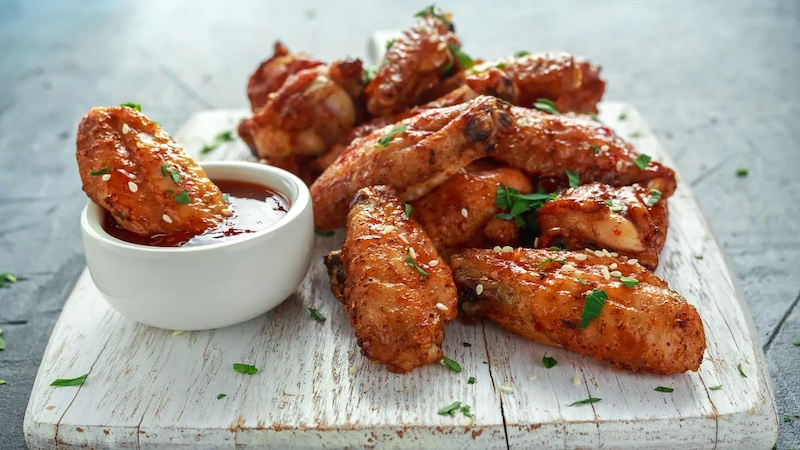

Spicy Chicken Wings Recipes

Spicy chicken wings, also called Buffalo wing, is a popular bar food and appetizer. wings can be ordered mild or spicy, and boneless varieties are also common.
The name comes from Buffalo, New York, where the dish was created. Several origin stories exist, but the basic recipe is the same
Ingredients:
Core materials:
- 10 chicken wings
- 1 cup cornstarch(125 g)
- Cooking oil
- Sesame seeds
Batter:
- ½ cup cornstarch(65 g)
- ½ cup flour(65 g)
- 2 teaspoons salt
- 1 cup water(240 mL)
Sauce:
- 2 tablespoons soy sauce
- ¼ cup honey(85 g)
- 2 tablespoons rice vinegar
- 2 tablespoons gochujang (Korean chili paste)
- 2 cloves garlic (minced)
- 1 tablespoon ginger (grated)
Directions:
- Mix the ingredients for the batter in a bowl until smooth with no lumps.
- Heat oil in a pot to 340°F (170°C)
- Dip a chicken wing into the cornstarch, shaking off excess, then dredge the wing into the batter, dripping off excess.
- Fry half of the wings at a time for about 5-7 minutes, until light golden. The oil will drop to about 320°F (160°C).
- Drain the wings and increase the heat. Heat oil to about 375°F (190°C).
- Fry the wings a second time until golden brown and crispy. Drain and set aside.
- In a pan, combine all the ingredients for the sauce and stir until bubbling. Toss in the wings.
- After all the spices are well mixed, place it on a plate and serve.